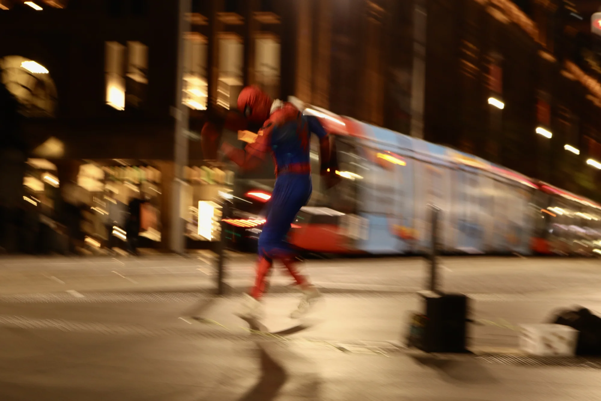

Sydney, Australia
Chelsea, Ruslan, Alex and I were walking through Chinatown when we spotted Spider-Man dancing to Taylor Swift. The city night was filled with energy as the crowd surrounded this guy dancing in a Spider-Man suit. The crowd exploded when a second guy came out with a Spider-Man mask out of the blue, high-fived the Taylor Swift dancing Spider-Man and ran back into the crowd. It's funny how a simple suit and speaker can create such excitement and joy. Humans are quite simple creatures to entertain. Just pop music and an iconic fit.
my Sydney list